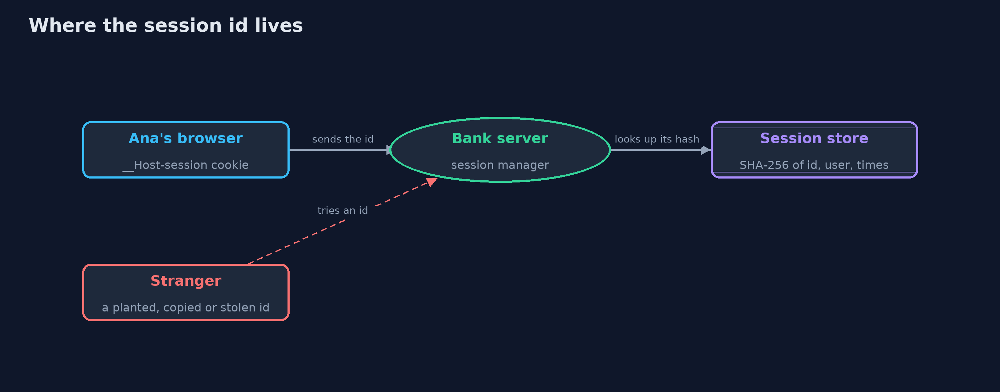
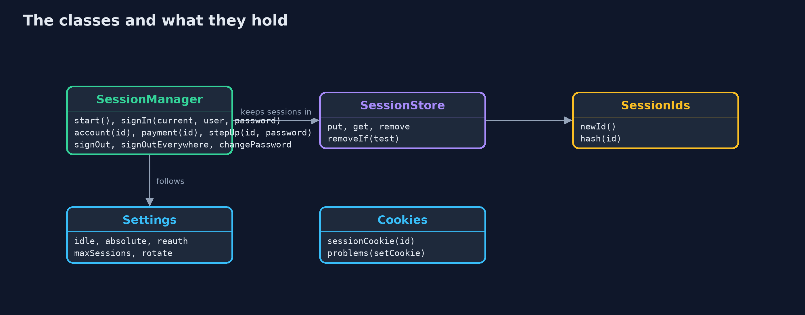
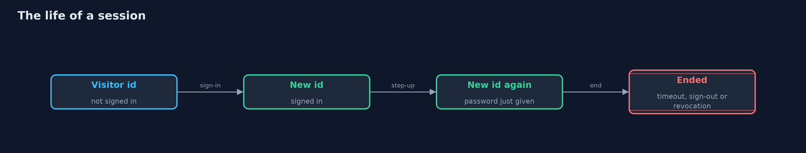
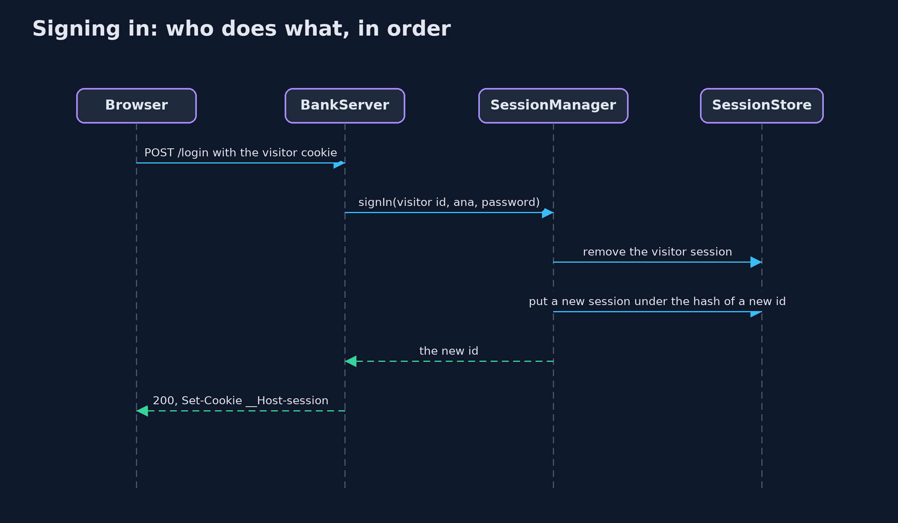

Session Management: Ids, Rotation, Timeouts and Sign-Out
src/main/java/com/jk/explore/security/sessions/
├── Answer.java What the bank answers to a request that carries a session id
├── BankClient.java A real HTTP client that keeps its cookies in a {@link Browser}, so the session cookie is handled the way the demo describes
├── BankServer.java The bank's sign-in, account and sign-out pages on a real HTTP server on this machine's loopback address
├── Browser.java A browser's cookie jar, enough to follow what happens to the session cookie
├── Cookies.java The session cookie, written with every attribute that protects it, and a check that lists what a Set-Cookie header is missing
├── Session.java One session as the server stores it
├── SessionDemo.java Runs the online bank story in five numbered acts and prints exact, repeatable results
├── SessionIds.java Session ids: 128 bits from SecureRandom, written as 22 base64url characters
├── SessionManager.java The bank's session manager
├── SessionStore.java Where sessions live, keyed by the hash of their id
├── Settings.java How long sessions last and how the manager treats them
├── SimClock.java A clock in seconds that moves only when told, so every timeout in the demo happens at the same moment on every run
└── Users.java The bank's customers and their passwords, kept as salted PBKDF2 hashes and checked in constant time
A session id is as good as a password for as long as it lives, so the server makes it random and stores only its hash, issues a new one at every sign-in and step-up, ends it after idle and absolute timeouts, and forgets it on sign-out, everywhere and after a password change.
After a customer signs in, the bank does not ask for the password on every request. It hands the browser a session id in a cookie, and from then on that id is all that proves who is asking. A session id is therefore as good as a password for as long as it lives, and session management is about keeping that window small and safe.
The rules this project builds, one act each:
- A random id: 128 bits from SecureRandom, stored on the server only as its SHA-256, and compared in constant time.
- A new id at every sign-in and step-up, so an id that someone knew before the customer signed in is worthless after it (session fixation).
- Idle and absolute timeouts, and the password again for a payment.
- Sign-out that ends the session on the server, sign-out everywhere, sessions ended by a password change, and a limit on sessions. The cookie
carries Secure, HttpOnly, SameSite=Strict and the __Host- prefix.
Maps to: OWASP Top 10 (2025) A07 Authentication Failures · CWE-384 Session Fixation · CWE-613 Insufficient Session Expiration · CWE-331 Insufficient Entropy · CWE-614 Sensitive Cookie Without Secure · CWE-1004 Sensitive Cookie Without HttpOnly · OWASP ASVS 5.0, the session management chapter.
The idea in everyday terms
Think of a cloakroom ticket. Whoever holds it gets the coat, so the ticket must be impossible to guess, the cloakroom keeps only a record it can check a ticket against, a new ticket is printed when a valuable coat is handed in, old tickets stop working at closing time, and a ticket handed back is torn up, not just dropped in the customer's pocket.
The scenario
An online bank signs customers in and keeps them signed in with a session cookie. The demo runs the bank's session manager in process with a clock that moves only when told, and once on a real HTTP server on this machine's loopback address. The customer is Ana, with a demo password.
Run
./gradlew run
The demo tells the story in 5 acts, each printing exact numbers that the tests check:
| Act | What it shows |
|---|---|
| 1. A session id: random, and never stored as itself | An id is 128 random bits in 22 base64url characters, a thousand are all different, the store keeps only hashes so a copy of it opens no session, and a changed id is refused. |
| 2. A new id at every sign-in and step-up | A bank that keeps the id at sign-in lets a stranger's planted id read Ana's account; a new id at sign-in and at step-up makes every earlier id worthless. |
| 3. How long a session lives | Idle for 14 minutes is fine and 16 ends the session; a busy session ends at 8 hours after 47 requests; a payment after 6 minutes asks for the password again. |
| 4. Signing out, everywhere, and the cookie | On a real server the cookie has no problems, and a copy made before sign-out gets 401; a sign-out that only clears the cookie leaves the session alive; everywhere, password change and a limit end other sessions. |
| 5. The bill | Two servers with separate session memories refuse each other's sessions; a shared store fixes it; a 20-minute pause costs a sign-in. |
Test
./gradlew test
25 tests in CookieAndServerTest, DemoRunsTest, SessionIdsTest, SessionManagerTest. SHA-256 is checked against the FIPS 180-2 value for "abc". The clock is simulated and ids are never printed, so the output is the same on every run; the loopback server is tested with a real HTTP client.
What the simulation got right, and what it left out
The session manager runs in process with a clock that moves only when the demo moves it, so every timeout happens at the same moment on every run. One act uses a real HTTP server on this machine's loopback address; the port is never printed. Session ids are random and are never printed either, so the demo prints only facts that do not depend on them.
Technologies and versions
Every version below is pinned in the project's build files and was the latest stable release when the project was built.
| Technology | Version | Used for |
|---|---|---|
| Java | 25 | the language and runtime; a Gradle toolchain finds or downloads the JDK |
| Gradle | 9.8.1 (wrapper) | build and run; nothing to install, the wrapper downloads it |
| org.junit.jupiter:junit-jupiter | 6.1.3, set by junit-bom | JUnit 5: the tests (tests only) |
| org.junit.platform:junit-platform-launcher | 6.1.3, set by junit-bom | JUnit platform launcher, which Gradle needs to run the tests (tests only) |
| videokit | repository tool (tools/videokit) |
the narrated video and animation: Piper en_US-amy-medium, speed 0.8, longer pauses (the amy-slow voice) |
Learning Material
| Document | What it is for |
|---|---|
| Problem statement | the situation and what the project must show |
| Prerequisites | what you need to know first |
| Session Management: Ids, Rotation, Timeouts and Sign-Out, explained | the acts in prose |
| Session guide | a one-hour lesson with exercises |
| Animated walkthrough | the acts step by step, narrated |
| Threat model | what is protected, who could harm it, and how, using STRIDE |
| Spec | what this project must be true of |
| Expected output | the golden demo output every test and every port checks against |
The idea in one picture
The browser holds the id in a cookie; the bank holds only its hash, with the session's times.

Where each piece sits
SessionManager holds every rule; SessionStore holds sessions by the hash of their id.

How the data moves
A new id at each step that raises trust, and an end on the server however the session ends.

Who calls whom, in order

Video
video/session-management-explained.mp4 (with .m4a audio and .srt subtitles) is built by video/build_video.sh. Rendered media is not committed.
What it costs
- Server-side sessions need a store. With more than one server, every server must see the same sessions, so the store is shared, for example in Redis.
- Timeouts cost convenience. A customer who stops for twenty minutes signs in again; the right numbers depend on what the session can do.
- Asking for the password again adds friction to every payment after the first few minutes.
- A stolen id still works for a while. Rotation, timeouts and sign-out limit how long, not whether, so the cookie's attributes and HTTPS matter too.
When this is too much
Every site with sign-in needs random ids, rotation at sign-in, server-side sign-out and the cookie attributes; there is no smaller version. Absolute timeouts, step-up for payments and session limits are for sites where a session can move money or change an account, such as a bank.
Where you have already met this
- Cookies named
JSESSIONID,__Host-sessionor similar in a browser's developer tools. - "Your session has expired, please sign in again."
- "Sign out of all other devices" in account settings.
- Banking apps that ask for the password or a fingerprint again before a payment.
Where this sits
This project is in api-security and builds on authentication-vs-authorization, which introduced sessions and stale roles, and http-basics-and-headers, which introduced cookie attributes.